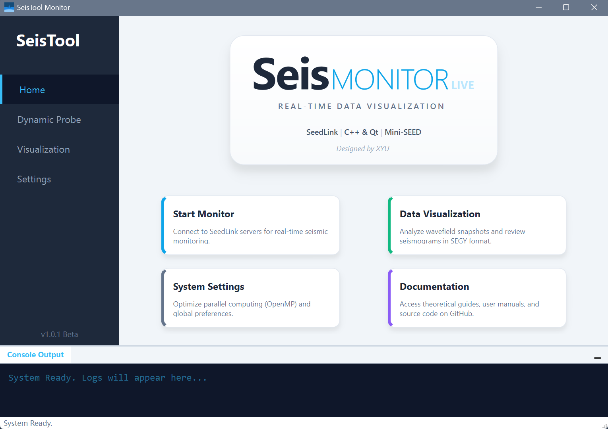
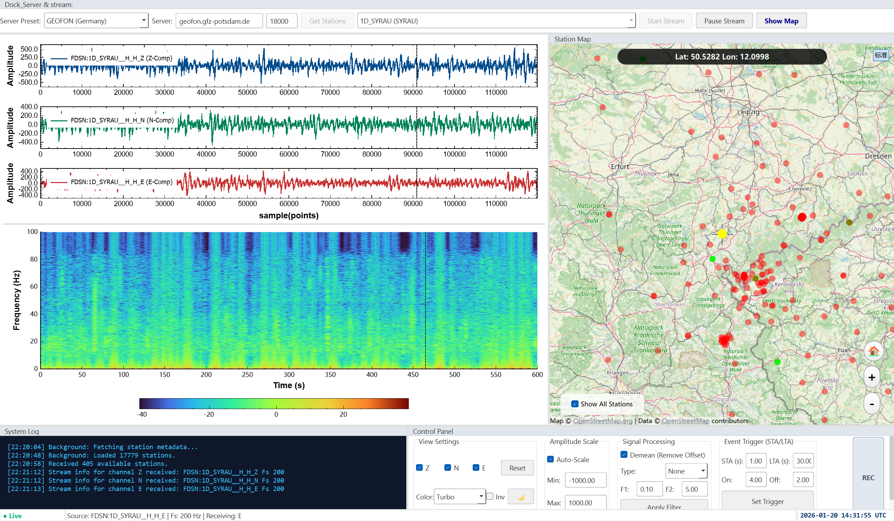
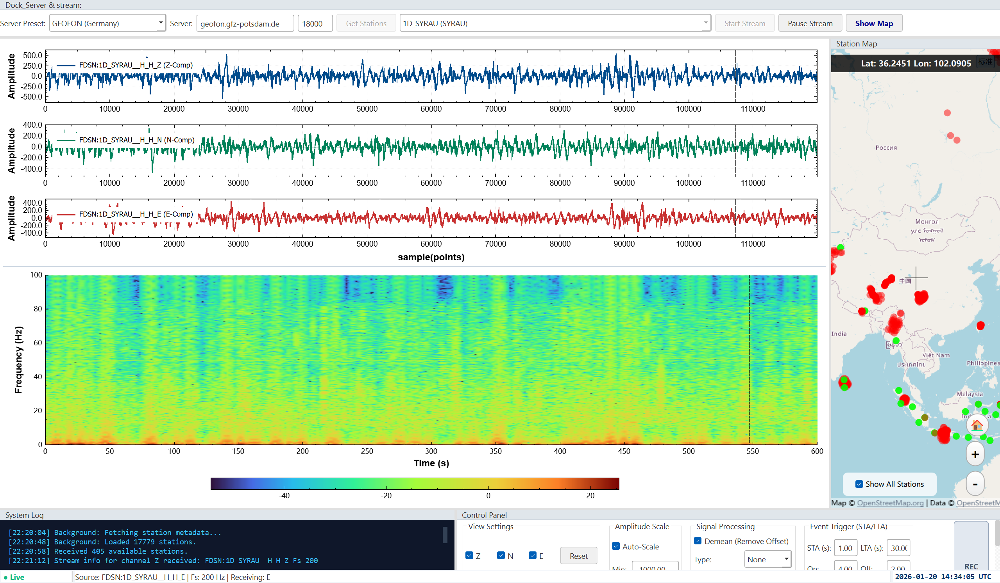
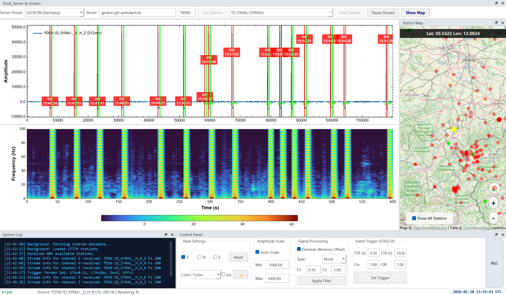

基于Qt、C++的SeisMonitor实时地震台站监测模块
SeisMonitor - 实时地震台站监测系统技术文档
简介
SeisMonitor是一款基于Qt、C++开发的实时地震台站监测系统，主要用于对地震台站的信号进行实时监测、数据处理、数据分析、数据可视化，并提供数据导出功能。
界面展示
主页

主页布局

监测台站显示
波形与时频分析瀑布图

异常信号检测

1. 产品概述 (Product Overview)
SeisMonitor 是一款基于 Qt 6 (C++) 和 OpenGL 技术构建的专业级地球物理数据监测终端。该软件专为地震学研究人员、台网监测人员及地球科学爱好者设计，支持通过国际通用的 SeedLink 协议 实时接入全球地震台网（如 GEOFON, IRIS 等），提供毫秒级延迟的波形显示、实时信号处理、时频分析及全球台站地理信息可视化功能。
2. 软件特点与核心优势 (Key Features & Advantages)
2.1 高性能实时渲染
- 极速绘图引擎：基于深度优化的
QCustomPlot和QML技术，支持在大数据量下流畅显示三分量（Z/N/E）波形及高分辨率瀑布图。 - 低延迟架构：采用异步 TCP Socket 通信与双缓冲机制，确保数据包到达与屏幕刷新之间的延迟降至最低。
- 海量地图标记：利用 QML
Instantiator与纹理优化技术，实现在地图上流畅渲染 17,000+ 个台站节点，支持毫秒级交互响应。
2.2 专业级信号处理 (DSP Pipeline)
- 实时滤波管道：内置 IIR 巴特沃斯滤波器（低通、高通、带通），支持用户动态调整截止频率，实时去除背景噪声。
- 基线校正：支持实时 去均值 (Demean)，自动消除仪器零漂，确保波形居中显示。
- 时频分析：集成实时 短时傅里叶变换 (STFT)，以瀑布图（Spectrogram）形式直观展示频率能量随时间的变化，辅助识别干扰信号（如 50Hz 工频干扰）。
2.3 智能事件检测 (Smart Detection)
- STA/LTA 触发算法：内置经典的短时/长时平均比法自动检测算法。
- 可视化报警：当地震发生时，波形图自动绘制 红色触发线 (ON) 和 绿色结束线 (OFF)，并在状态栏显示警报。
- 参数可调：支持用户针对不同环境噪声水平，实时调整 STA/LTA 窗口长度及触发阈值。
2.4 现代交互体验 (Modern UX)
- Dock 布局系统：采用 Visual Studio 风格的可停靠窗口设计，用户可自由拖拽、重组波形图、地图、控制台和设置面板，支持多屏工作。
- 深色/浅色主题：内置专业的“科研白”与“暗黑监测”模式，适应白天办公与夜间值守场景，图表配色（如 Viridis, Turbo, Seismic）符合科学可视化标准。
- 多维联动：
- 光标同步：在波形图上移动鼠标，Z/N/E 分量及瀑布图的光标线精准同步，便于对比相位。
- 图地联动：点击地图台站 -> 自动切换数据流；切换数据流 -> 地图自动高亮定位。
3. 功能模块详解 (Functional Modules)
3.1 数据连接与管理 (Connection Manager)
- 多服务器预设：内置 GEOFON (德国)、IRIS (美国)、RESIF (欧洲) 等主流数据中心地址，支持一键切换。
- FDSN 元数据同步：后台自动下载最新的台站经纬度信息，构建本地台站数据库。
- 智能列表：自动获取当前服务器可用的实时流列表，支持通过下拉框快速检索。
3.2 实时波形视图 (Waveform Viewer)
- 三分量显示：独立显示垂直 (Z)、北向 (N)、东向 (E) 分量，支持独立或同步缩放。
- 自适应量程：支持 Auto-Scale（根据振幅自动调整 Y 轴）和手动指定量程（如 ±2000 Counts）。
- 交互操作：
- 平移/缩放：鼠标拖拽平移，滚轮缩放时间轴。
- 数据框选：按住 Shift 键框选特定波形段进行高亮分析。
- 通道控制：可通过底部复选框快速隐藏/显示特定分量。
3.3 全球台站地图 (GIS Module)
- 混合地图源：集成高德地图（AutoNavi），支持 标准矢量图 和 卫星影像图 一键切换。
- 坐标纠偏：内置 WGS-84 到 GCJ-02 转换算法，确保中国境内台站位置与高德底图精准重合。
- 状态可视化：
- 🔴 红色三角形：离线台站（元数据存在，但无实时流）。
- 🟢 绿色三角形：在线台站（服务器当前可用）。
- 🟡 黄色三角形：当前正在监测的台站。
- 🔵 青色高亮：鼠标选中的台站。
- 性能优化：支持图层过滤（显示/隐藏离线台站），极大提升渲染性能。
3.4 数据录制与日志 (Recording & Logging)
- Mini-SEED 录制：支持将接收到的原始二进制数据包直接保存为标准的
.mseed文件，兼容 ObsPy、SAC 等专业软件。 - 系统控制台：底部集成日志输出窗口，实时记录连接状态、数据包到达时间、采样率变更及触发事件，支持日志导出。
4. 技术架构 (Technical Architecture)
| 组件 | 技术选型 | 说明 |
|---|---|---|
| 开发框架 | Qt 6.6.3 (C++) | 跨平台 GUI 框架，利用信号槽机制实现模块解耦。 |
| 网络协议 | TCP / HTTP | QTcpSocket 实现 SeedLink 协议；QNetworkAccessManager 实现 FDSN REST API 请求。 |
| 数据解析 | libmseed v3 | 行业标准库，用于解析 Mini-SEED 格式及 Steim-2 压缩数据。 |
| 绘图引擎 | QCustomPlot 2.1 | 定制化的高性能 2D 绘图库，支持 GPU 加速和图层管理。 |
| 地图引擎 | Qt Location / QML | 利用 OpenGL 硬件加速渲染地图瓦片和海量标记点。 |
| 数据结构 | 哈希表 (QHash) | 优化台站查找算法，将地图交互的时间复杂度从 O(N) 降至 O(1)。 |
5. 快速操作指南 (Quick Start)
- 启动连接：
- 在顶部工具栏选择服务器（如 “GEOFON”）。
- 点击 “Get Stations” 获取可用台站列表。
- 在下拉框中选择一个台站（或在地图上点击绿色三角形）。
- 点击 “Start Stream” 开始接收数据。
- 调整视图：
- 使用底部 “View Settings” 面板切换颜色主题或隐藏不需要的分量。
- 使用 “Amplitude Scale” 调整波形振幅显示范围。
- 信号处理：
- 在 “Signal Processing” 面板中，勾选 “Demean” 去除基线漂移。
- 选择 “Bandpass”，设置频率为
0.1-5.0Hz，点击 “Apply” 以滤除噪声。
- 设置预警：
- 在 “Event Trigger” 面板设置
ON=4.0,OFF=1.5。 - 点击 “Set Trigger”。当地震发生时，系统将自动画红线并报警。
- 在 “Event Trigger” 面板设置